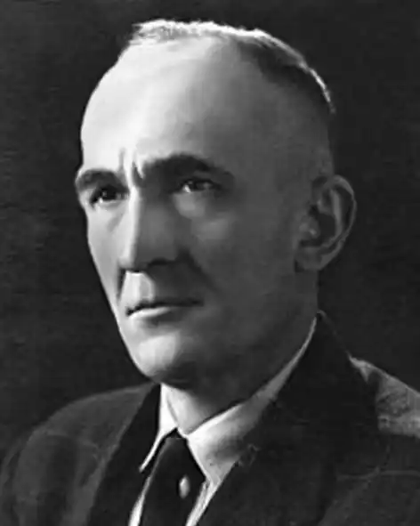

Народився Анатоль-Юліан Курдидик 24 липня 1905 року, як найстарший син о. Петра Курдидика, сотрудника парафії УГКЦ Успіння Пресвятої Богородиці в Підгайцях(нині: Тернопільської області) і Стефанії з роду де Остоя Стеблецької. Сам Петро Курдидик — виходець із села Бовшів та син рільника Симеона Курдидика й Марії Атаманюк.
Своє дитинство Анатоль Курдидик прожив у селі Покропивна, де його батько служив місцевим парохом до 1919 року. Відвідував школу в Тернополі, а в 1916 році у зв'язку з російською окупацією Тернополя, вступив до Української академічної гімназії у Львові. Тут у 1924, перед самими випускними іспитами, його заарештовано польською владою й ув'язнено на тримісячний термін у тюрмі в Бережанах. Згодом одержавши, як політв'язень, дозвіл на допущення до матури, склав її в 1926 році.
Анатоля згодом прийнято на юридичний факультет Університету Яна Казиміра (нині: Львівський університет), але таки після вступних іспитів у 1926 його мобілізовано до польського війська, в якому відбув півторарічну службу в мундирі звичайного вояка Піхотного полку № 2 у Піньчуві. Прилапаний у Піньчовському повіті з посилкою підпільної "Сурми" (офіційним органом УВО), закінчує службу в армії важкою військовою тюрмою в Перемишлі — і, звільнений з корпусної тюрми після трьох місяців казематного ув'язнення, назавжди обирає життєвий шлях українського літератора й публіциста: стає кореспондентом і співробітником українських газет у довоєнному Львові; згодом — на еміграції та в Західній діаспорі. Рання літературна діяльність Анатоля Курдидика невід'ємно пов'язана із львівськими літературними групами "Листопад" і "12", з Товариством письменників і журналістів ім. Івана Франка (ТОПІЖ) у довоєнному Львові. Дебютував нарисом "Осьмак" в 1924 р. у місячнику "Поступ". Як поет і фейлетоніст активно друкувався в часописах "Український голос", "Вісти з Лугу", "Назустріч", "Неділя", "Дажбог", "Жіноча доля", "Нова хата", "Діло", "Студентський шлях", "Просвіта"; як гуморист — у "Комарі" і "Зизі". Автор сценічних творів: оперета "Залізна острога" (з Луцем Лісевичем), що йшла в театрі Миколи Бенцаля в 1934 році; популярна комедія "Ой, та Просвіта" у 1938 p. Вірші, нариси, новелі й оповідання його публікувались у всій західноукраїнській пресі в 1930—1939 pp., та в емігрантських періодиках 1940—1945 pp. Переїхавши по Другій світовій війні в Канаду, очолював у Торонто Літературно-мистецький клуб, був співзасновником і головою Спілки українських журналістів Канади; у м. Вінніпег — організатор і президент Літературно-мистецького клубу (1963—1973). Член ОУП "Слово" і Української вільної академії наук. Життя змусило Анатоля Курдидика писати публіцистику: журналістська діяльність бере початок у Перемишлі в "Українському голосі" (1928—1929), продовжується у Львові у тижневику "Неділя" (1929—1934) та завершується у щоденнику "Діло" (1934—1939). З настанням "золотого вересня", будучи вже відомим літератором і журналістом зі стажем, подався на еміграцію: Польща (1940—1945), Західна Німеччина (1945—1951), Канада (з 1951 року). Після радянської окупації Львова працює віденським кореспондентом для "Краківських вістей" у Польщі (1940—1945), та співробітником газети для українських біженців "Неділі" у місті Ашафенбург, Німеччина (1945—1949). З 1951 року в Канаді: у Торонто — з 1954 співробітник часопису "Український робітник"; з 1956 співзасновник і редактор тижневика "Вільне слово" (до 26 червня 1960). У місті Вінніпег — редактор тижневика "Новий шлях" (1960—1962) і співредактор "Поступу" (1962—1970), співробітник-кореспондент з 1970 р. "Українського голосу". Відігравав помітну роль в культурному житті української діаспори в Канаді. В емігрантській українській пресі займав націоналістично-патріотичні позиції. За довголітню працю на полі української журналістики нагороджений у 1974 р. Шевченківською медаллю Конґресу Українців Канади.